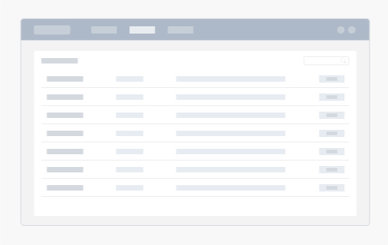
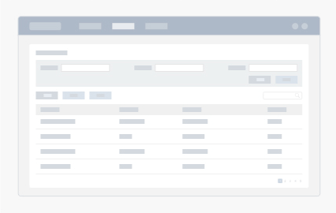
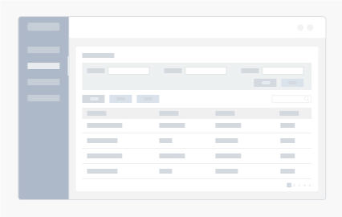

控制台页
按照信息的重要程度来阻止页面排版，突出展示关键信息；
将数据可视化，让用户可以直观地了解关键信息及整体情况；
合理地使用颜色及栅格排版，减轻用户的视觉负担。
上下结构
页面整体布局上下结构，导航在上，内容在下；
内容部分采用左右2：1布局；
左右边距各为30px，组件边距20px；
面包屑高度为56px。
左右结构
页面整体布局左右结构，导航在左，内容在右；
内容部分采用上下1：3布局；
左右边距各为20px，组件边距20px；
此布局可以不用面包屑。
列表页
列表设计是并列式展现信息，方便用户能快速查看基本信息及操作，
根据用户需求来定义信息展示的等级，仅展示关键信息及操作；
当信息内容较为复杂时，可将次要的信息折叠或放到详情页面中，
以递进的方式让用户获得更多的信息。
上下结构
页面整体布局上下结构，导航在上，列表内容在下；列表边距各30px；列表行高32px。

左右结构
页面整体布局左右结构，导航在左，列表在右；
列表边距各20px；列表行高32px。
表格页
表格作为多维信息展示的载体，使复杂的信息更易于阅读和理解。
它的易读性，便捷性，易操作性对产品的体验起着举足轻重的作用。
构造清晰的表格布局,有利于提升读者对信息的接收速度和理解速度；
更多地展示用户所必需的信息，通过视觉上的调优突出展示重点信息；
当界面需要在一个很大的多纵行表格中展示数据，或每一横列数据有多行信息时，
可以巧妙地运用横向或纵向斑马条,使得信息条目之间更为分明，视觉上更易区分。
上下结构
页面整体布局上下结构，导航在上，表格内容在下；
表格边距各30px；表格行高32px。

左右结构
页面整体布局左右结构，导航在左，表格在右；
表格边距各20px；表格行高32px。

详情页
详情页面一般会承载大量的基本信息，扩展信息，或者状态信息。
对于信息效率和优先级判定的要求会比较高。
清晰的布局能帮助快速看到关键信息，提高决策效率，清晰的排版格式，
易于阅读的文本大小及间距，都是影响用户获取信息效率的关键因素；
图文搭配比单文本展示信息能更好地提高用户的理解。
上下结构
页面整体布局上下结构，导航在上，详情页内容在下；
详情页边距各30px。
左右结构
页面整体布局左右结构，导航在左，详情页在右；
详情页边距各20px。
表单页
表单页通常用来执行登陆、注册、预定、下单、评论等任务，
是产品中数据录入必不可少的页面模式。
考虑用户的浏览方式，提供清晰的用户视线浏览路径；
内容是表单的核心，保证表单的内容精简（尽量避免多余的输入项）；
标签的命名要易于用户阅读和理解，避免模糊的描述给用户造成困扰；
醒目的提交或完成按钮，放在用户的浏览线的终点更有利于用户的完成操作。
上下结构
页面整体布局上下结构，导航在上，表单页内容在下；
表单页边距各30px。
左右结构
页面整体布局左右结构，导航在左，表单页在右；
表单页边距各20px。